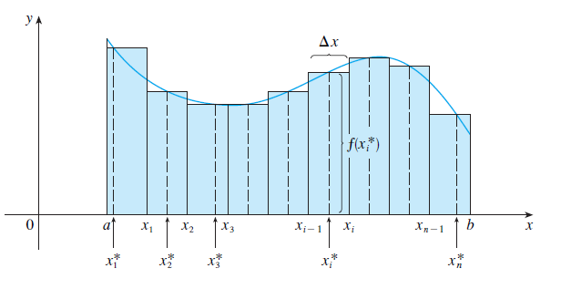
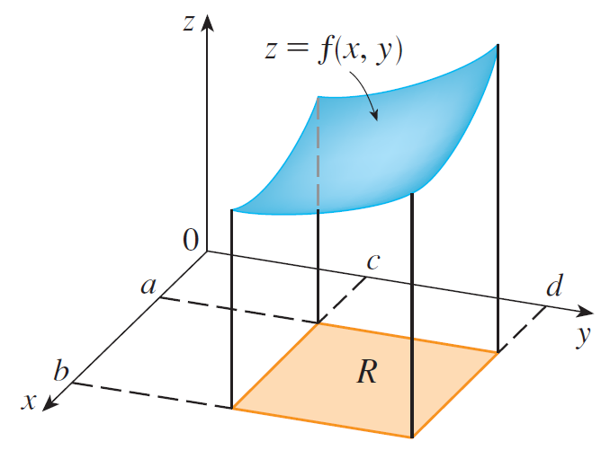
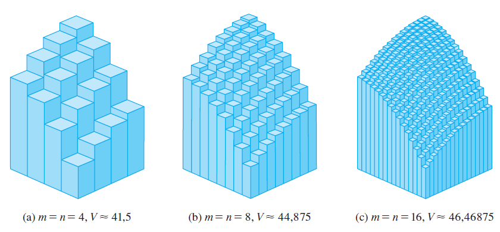
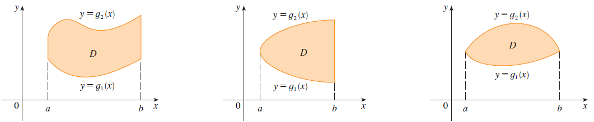
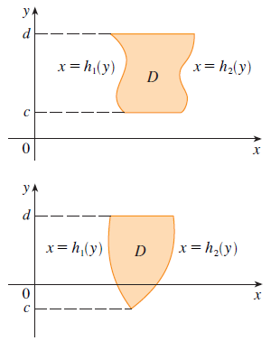

PARTE 3 · AULAS 29–35
Integrais duplas e Teorema de Fubini
As integrais duplas estendem a ideia de integral definida para funções de duas variáveis. Nesta seção, construiremos a integral dupla a partir de somas de Riemann, interpretaremos geometricamente seu significado, veremos como o Teorema de Fubini transforma um problema bidimensional em integrais sucessivas de uma variável e aprenderemos a integrar sobre regiões não retangulares.
1. Da integral de uma variável à integral dupla
Em Cálculo de uma variável, a integral definida pode ser construída aproximando a área sob uma curva por uma soma de áreas de retângulos. Quando passamos para uma função de duas variáveis,
o domínio deixa de ser um intervalo da reta e passa a ser uma região do plano \(xy\). Consequentemente, em vez de dividir um intervalo em pequenos segmentos, dividimos uma região plana em pequenos sub-retângulos.
Se a função for não negativa, cada pequeno sub-retângulo da base, com área \(\Delta A\), determina aproximadamente um pequeno paralelepípedo. Sua altura é dada pelo valor da função em um ponto escolhido dentro daquele sub-retângulo.
2. Particionando um retângulo
Considere um retângulo
Dividimos o intervalo \([a,b]\) em \(m\) partes iguais e \([c,d]\) em \(n\) partes iguais. Assim,
Cada par de subdivisões produz um pequeno retângulo \(R_{ij}\). Escolhemos dentro dele um ponto
O ponto pode, em princípio, ser qualquer ponto do sub-retângulo. Quando a função é integrável, uma escolha conveniente é utilizar o canto superior direito,

3. Soma dupla de Riemann
Somando as contribuições de todos os \(m\times n\) sub-retângulos, obtemos
Essa expressão é denominada soma dupla de Riemann. Quando \(f(x,y)\geq 0\), ela representa a soma dos volumes dos paralelepípedos usados para aproximar o sólido situado abaixo da superfície.
Quanto mais fina for a partição, menores serão os sub-retângulos e, em condições adequadas, melhor será a aproximação.
4. Definição da integral dupla
A integral dupla de \(f\) sobre o retângulo \(R\) é definida por
desde que esse limite exista.
A definição não exige que \(f\) seja positiva. A condição \(f\geq0\) é necessária apenas quando queremos interpretar diretamente a integral como um volume geométrico.
O que significa cada símbolo?
- \(\displaystyle \iint_R\) indica que a integração ocorre sobre uma região bidimensional \(R\).
- \(f(x,y)\) é a função que está sendo integrada.
- \(dA\) representa um elemento infinitesimal de área.
- Em coordenadas cartesianas, esse elemento será escrito como \(dA=dx\,dy\) ou \(dA=dy\,dx\), conforme a ordem de integração.
- Os índices \(i\) e \(j\) identificam os pequenos retângulos da partição.
- O limite formaliza a ideia de tornar a partição progressivamente mais fina.
5. Interpretação geométrica: volume
Suponha que
em toda a região \(R\). O gráfico
forma uma superfície no espaço. O sólido situado acima de \(R\) e abaixo dessa superfície possui volume

6. Exemplo: aproximação por soma de Riemann
Exemplo 1 — Aproximando o volume
Estime o volume do sólido situado acima do quadrado
e abaixo do paraboloide elíptico
Divida \(R\) em quatro quadrados iguais e escolha como ponto de amostragem o canto superior direito de cada quadrado.
Como \(m=n=2\),
Logo,
Os cantos superiores direitos são
Refinando a partição, as aproximações apresentadas no exemplo são

O volume exato é
O exemplo mostra concretamente a ideia de limite: ao aumentar o número de sub-retângulos, a soma de Riemann aproxima cada vez melhor a integral dupla.
7. Por que aparecem integrais iteradas?
Calcular uma integral dupla diretamente pela definição seria, na maioria das situações, trabalhoso. A estratégia fundamental consiste em reduzir o problema a duas integrações sucessivas de uma variável.
Considere novamente
Fixe inicialmente um valor de \(x\). Nesse instante, \(x\) passa a ser tratado como constante e integramos apenas em relação a \(y\):
Quando \(f\geq0\), \(A(x)\) pode ser interpretada como a área de uma seção transversal do sólido.
Depois, acumulamos essas áreas enquanto \(x\) varia de \(a\) até \(b\):
Substituindo \(A(x)\),
Essa é uma integral iterada: primeiro calculamos a integral interna e, em seguida, a integral externa.
8. Teorema de Fubini
Se \(f\) for contínua no retângulo
então
e também
O teorema é fundamental porque transforma uma integral dupla em duas integrais ordinárias sucessivas.
Ordem \(dy\,dx\)
Primeiro integramos em relação a \(y\). Durante essa integração, \(x\) é tratado como constante.
Ordem \(dx\,dy\)
Primeiro integramos em relação a \(x\). Durante essa integração, \(y\) é tratado como constante.
9. Exemplo: calculando nas duas ordens
Exemplo 3
Calcule
onde
Solução 1 — Integrar primeiro em \(y\)
Na integral interna, \(x\) é constante. Portanto,
Solução 2 — Integrar primeiro em \(x\)
Agora \(y\) é tratado como constante.
As duas ordens conduzem ao mesmo resultado, como prevê o Teorema de Fubini.
10. A escolha da ordem de integração
Embora Fubini permita trocar a ordem de integração em um retângulo, a dificuldade algébrica pode mudar drasticamente.
Exemplo 4
Considere
com
Se integrarmos primeiro em relação a \(x\),
Como \(y\) é constante,
Logo,
Se escolhermos a ordem contrária, teremos
Agora a integral interna exige integração por partes. Portanto, as duas ordens são matematicamente válidas, mas a primeira é computacionalmente mais conveniente.
11. Integrais duplas sobre regiões gerais
Até agora consideramos principalmente regiões retangulares. Entretanto, em aplicações, a região \(D\) frequentemente é limitada por curvas.
Para uma região limitada \(D\), podemos imaginar um retângulo \(R\) que a contenha e definir uma função auxiliar igual a \(f\) dentro de \(D\) e igual a zero fora de \(D\). Isso permite estender a definição de integral dupla para regiões gerais.
Na prática, porém, o cálculo é feito descrevendo \(D\) de forma adequada por meio de seus limites.
12. Regiões do tipo I
Uma região é denominada tipo I quando pode ser percorrida verticalmente entre duas curvas:
Assim,

A integral é calculada por
13. Regiões do tipo II
Uma região é denominada tipo II quando pode ser percorrida horizontalmente:
Assim,

e
14. Exemplo: região limitada por duas parábolas
Exemplo 5
Calcule
onde \(D\) é limitada pelas parábolas
e
Passo 1 — Encontrar as interseções
Igualamos as duas curvas:
Passo 2 — Descrever a região
A parábola \(y=2x^2\) é a fronteira inferior e \(y=1+x^2\) é a fronteira superior. Portanto,
A região é naturalmente descrita como tipo I.
Passo 3 — Montar a integral
Passo 4 — Calcular
Observe que a parte mais importante do problema não foi calcular a primitiva, mas descrever corretamente a região de integração.
15. Uma região pode admitir duas descrições
Uma mesma região pode, em alguns problemas, ser descrita tanto como tipo I quanto como tipo II. Isso permite escolher a ordem que produz a integral mais conveniente.
Exemplo 6 — Volume sob um paraboloide
Determine o volume do sólido situado abaixo do paraboloide
e acima da região \(D\) limitada pela reta
e pela parábola
Descrição como região tipo I
As curvas se encontram quando
Portanto, \(x=0\) ou \(x=2\), e
Assim,
Calculando a integral interna,
Após substituir os limites e integrar em \(x\), obtemos
Descrição como região tipo II
Da parábola \(y=x^2\), considerando a fronteira relevante,
Da reta \(y=2x\),
Como \(y\) varia de \(0\) a \(4\),
Logo,
Essa segunda descrição conduz ao mesmo resultado:
16. Nem sempre as duas descrições são igualmente simples
Em alguns problemas, representar \(D\) como tipo I exige dividir a região em duas ou mais partes, enquanto uma descrição tipo II utiliza apenas uma integral — ou vice-versa.
Por isso, antes de montar a integral:
- desenhe as curvas que delimitam a região;
- determine os pontos de interseção;
- teste mentalmente uma seta vertical;
- teste mentalmente uma seta horizontal;
- escolha a descrição que exige menos subdivisões e produz integrais mais simples.
17. Propriedades das integrais duplas
As integrais duplas preservam várias propriedades familiares das integrais de uma variável. Essas propriedades são importantes tanto para manipulações algébricas quanto para estimativas.
17.1 Linearidade em relação à soma
Podemos integrar separadamente os termos de uma soma.
17.2 Multiplicação por constante
Uma constante multiplicativa pode ser retirada da integral.
17.3 Preservação da ordem
Se
em toda a região \(D\), então
Em particular, se \(f(x,y)\geq0\), então
17.4 Aditividade em relação à região
Se
e as regiões não se sobrepõem, exceto possivelmente em suas fronteiras, então
Essa propriedade é particularmente útil quando uma região não pode ser descrita por uma única expressão simples.
17.5 Área de uma região
Se integrarmos a função constante \(1\), obtemos a área da região:
Geometricamente, isso pode ser interpretado como o volume de um cilindro de base \(D\) e altura \(1\):
17.6 Estimativa da integral
Se existem constantes \(m\) e \(M\) tais que
em toda a região \(D\), então
A interpretação é direta: se a superfície permanece entre as alturas \(m\) e \(M\), a integral permanece entre os volumes dos cilindros de base \(D\) e alturas \(m\) e \(M\).
18. Estratégia geral para resolver uma integral dupla
Em problemas de Engenharia, o cálculo algébrico é apenas uma parte da solução. A etapa decisiva frequentemente é transformar corretamente a geometria do problema em limites de integração.
1. Identifique a região
Determine as curvas ou retas que formam sua fronteira e encontre os pontos de interseção relevantes.
2. Faça um esboço
Mesmo um desenho simples costuma revelar imediatamente qual variável deve ser integrada primeiro.
3. Escolha a ordem
Compare \(dy\,dx\) e \(dx\,dy\). Escolha a ordem que simplifica a região e o integrando.
4. Escreva os limites
Os limites internos descrevem o percurso dentro da região; os externos descrevem a extensão total da variável restante.
5. Calcule a integral interna
Durante essa etapa, trate a outra variável como uma constante.
6. Calcule a integral externa
Depois da primeira integração, resta uma integral ordinária de uma variável.
19. Como ler corretamente uma integral iterada
Considere
A leitura matemática correta é:
- escolha um valor de \(x\) entre \(a\) e \(b\);
- mantenha esse \(x\) fixo;
- percorra verticalmente a região desde \(y=g_1(x)\) até \(y=g_2(x)\);
- acumule os valores de \(f(x,y)\) nesse percurso;
- depois faça \(x\) percorrer todo o intervalo \([a,b]\).
Essa interpretação geométrica é muito mais útil do que simplesmente memorizar a posição dos diferenciais \(dy\,dx\).
20. Erros que devem ser evitados
- Trocar a ordem sem alterar os limites. Ao passar de \(dy\,dx\) para \(dx\,dy\), a região precisa ser reescrita.
- Confundir a variável da integral interna. Em \(dy\,dx\), integra-se primeiro em \(y\), mantendo \(x\) constante.
- Não desenhar regiões limitadas por curvas. Isso frequentemente leva à inversão dos limites superior e inferior.
- Usar Fubini mecanicamente. A ordem deve ser escolhida levando em consideração a dificuldade da primitiva.
- Interpretar qualquer integral dupla como volume. A interpretação direta como volume exige \(f(x,y)\geq0\).
- Confundir \(dA\) com uma nova variável. \(dA\) representa um elemento de área; em coordenadas cartesianas, ele se materializa como \(dx\,dy\) ou \(dy\,dx\).
Use o ambiente 3D para representar superfícies como \(z=16-x^2-2y^2\) e \(z=x^2+y^2\), observar a região no plano \(xy\) e relacionar geometricamente a integral dupla com o volume sob uma superfície.
STEWART, J. Cálculo. Volume 1. São Paulo: Cengage Learning, 2013.
STEWART, J. Cálculo. Volume 2. São Paulo: Cengage Learning, 2013.